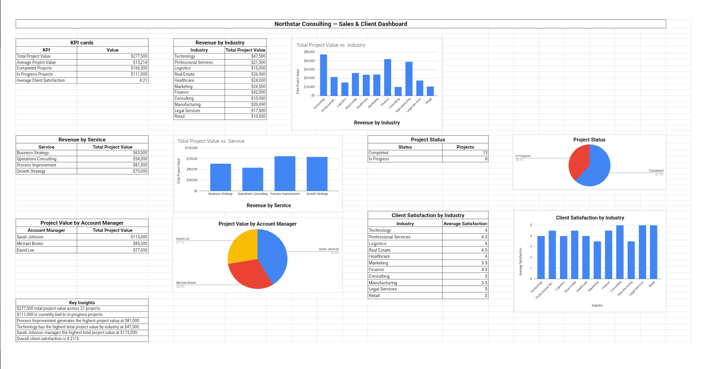

Data Entry, Research & Reporting
Data Entry, Research & Reporting System
A practical data workflow covering raw data organization, data cleaning, research questions, analysis, reporting and dashboard development.

Overview
This project is an independent portfolio demonstration created to demonstrate practical business workflows. It presents a structured data workflow covering the full path from raw data organization through cleaning, research, analysis, reporting and dashboard development.
Business Scenario
Teams regularly work with raw data that needs to be cleaned, organized and turned into useful reports. Without a structured process, data becomes inconsistent, analysis is hard to reproduce and reporting takes longer than necessary. This demonstration shows how a practical data workflow can bring order to that work.
Objective
To build a clear, repeatable data workflow that organizes raw data, applies consistent cleaning rules, structures research questions, produces clear analysis and turns the results into readable reports and a simple dashboard.
What Was Built
A set of structured documents and sheets covering: a raw data organization template, a data cleaning checklist and process, a research question framework, an analysis worksheet, a reporting template and a basic dashboard layout.
Workflow / Process
Raw data is organized into a consistent structure, then cleaned using defined rules to remove duplicates, fix formatting and standardize values. Research questions guide the analysis, which is carried out in a structured worksheet. Results are summarized in a report template and surfaced in a simple dashboard view.
Each step is documented so the workflow can be repeated consistently.
Tools Used
Google Sheets for data organization, cleaning, analysis and dashboards, Google Docs for research notes and reporting, and Google Drive for organized file storage.
Skills Demonstrated
Key Takeaways
- Consistent data organization makes cleaning and analysis faster and more reliable.
- Defined cleaning rules reduce errors and make the process repeatable.
- Structured research questions keep analysis focused and purposeful.
- A simple dashboard turns raw data into a view that is easy to understand at a glance.